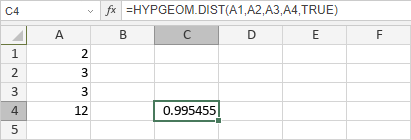

HYPGEOM.DIST Funkcija
Funkcija HYPGEOM.DIST je jedna od statističkih funkcija. Koristi se za vraćanje hipergeometrijske distribucije, tj. verovatnoće datog broja uspeha u uzorku, uzimajući u obzir veličinu uzorka, broj uspeha u populaciji i veličinu populacije.
Sinaksa
HYPGEOM.DIST(uspeh_u_uzorku, broj_uzorka, uspeh_u_populaciji, broj_populacije, kumulativno)
Funkcija HYPGEOM.DIST ima sledeće argumente:
| Argument | Opis |
|---|---|
| uspeh_u_uzorku | Broj uspeha u datom uzorku, numerička vrednost veća od 0, ali manja od manjeg od broj_uzorka ili uspeh_u_populaciji. |
| broj_uzorka | Veličina uzorka, numerička vrednost veća od 0, ali manja od broj_populacije. |
| uspeh_u_populaciji | Broj uspeha u populaciji, numerička vrednost veća od 0, ali manja od broj_populacije. |
| broj_populacije | Veličina populacije, numerička vrednost veća od 0. |
| kumulativno | Logička vrednost (TRUE ili FALSE) koja određuje oblik funkcije. Ako je TRUE, funkcija vraća kumulativnu distribucionu funkciju. Ako je FALSE, funkcija vraća funkciju verovatnoće (probability mass function). |
Napomene
Kako primeniti funkciju HYPGEOM.DIST.
Primeri
Slika ispod prikazuje rezultat koji vraća funkcija HYPGEOM.DIST.
